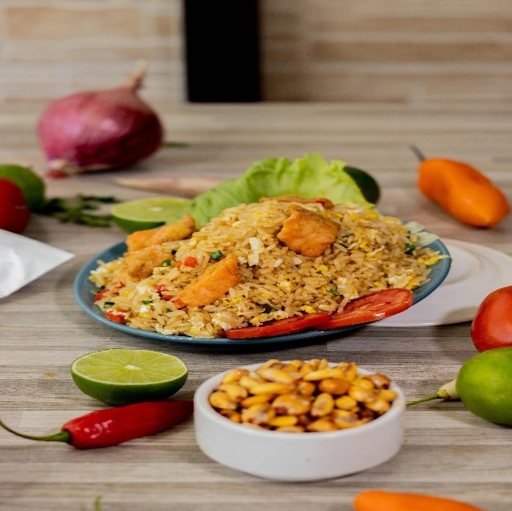
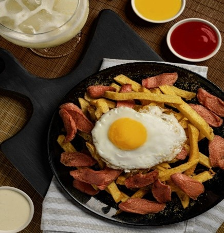

Coast cuisine
Experience the fresh and vibrant flavors of Peru’s coastal region, where seafood reigns supreme.
Popular Foods in the Coast

- Chaufa
- Chaufa is a beloved fusion dish that combines Peruvian ingredients with Chinese-style fried rice. It originates from the influence of Chinese immigrants who brought their culinary traditions to Peru. The dish features rice stir-fried with soy sauce, eggs, and green onions, along with proteins like chicken, beef, shrimp, or pork. Variations can include vegetables such as bell peppers, peas, or carrots. Often served in Peruvian-Chinese restaurants, known as chifas, Chaufa is a flavorful example of cultural blending. It is frequently enjoyed as a main course or as part of a larger meal.

- Salchipapa
- Salchipapa is a simple yet iconic street food dish made of fried sausages and French fries. Popular for its affordability and quick preparation, it became a working-class staple before gaining popularity across all social classes. The dish is served with a variety of flavorful sauces such as ketchup, mayonnaise, mustard, or spicy aji sauce, making it customizable. Some modern variations include toppings like fried eggs, cheese, or sliced avocado.

- Causa
- Causa is a cold layered dish that highlights Peru’s vibrant yellow potatoes, known for their creamy texture. The potatoes are mashed with lime juice, aji amarillo (yellow chili) paste, and oil to create a flavorful base. Layers often include fillings like shredded chicken, tuna, avocado, or even seafood, providing many variations. Causa is typically garnished with olives, boiled eggs, or fresh herbs, making it a versatile and refreshing appetizer.